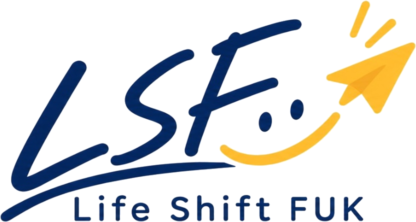

Life Shift FUKを応援してくださる企業
Life Shift FUKの活動は、想いに共感してくださる企業の皆さまに支えられています。
ここでは、スポンサー企業の皆さまをご紹介します。
現在、スポンサー企業を募集しています。ご興味のある企業さまは、公式LINEからお気軽にお問い合わせください。

Life Shift FUKの活動は、想いに共感してくださる企業の皆さまに支えられています。
ここでは、スポンサー企業の皆さまをご紹介します。
現在、スポンサー企業を募集しています。ご興味のある企業さまは、公式LINEからお気軽にお問い合わせください。